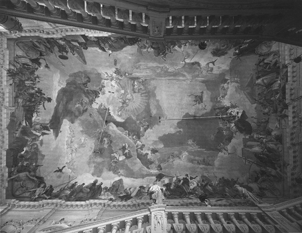
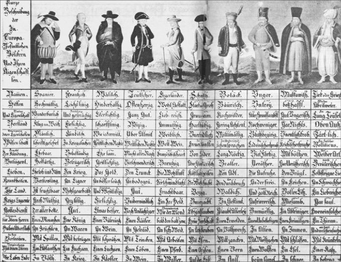
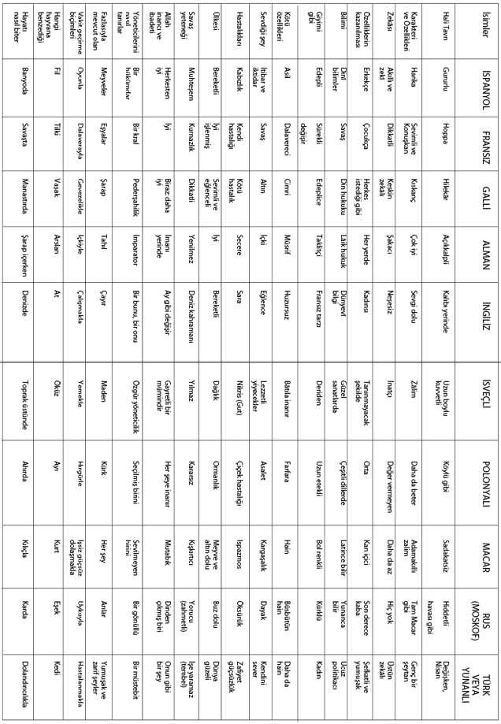

Giriş
Batı Kültürü ve Türkiye
Genel Görüş
Bugün, Türkiye’de Avrupa Birliği denen iktisadî ve siyasî oluşumun kültürel boyutu çok az tartışılmaktadır. Kültür bir hayat tarzını ve geçmiş kuşakların mirasını ifade ettiğine göre, Avrupa ve Türkiye bir uyum içinde midir? Tarihsel geçmiş, hal ve gelecek açısından bu uyum sorununun tartışılması icab eder. Oysa toplumumuzda hem idare edenler, hem de idare edilenler, Avrupa Birliği’ni sadece iktisadî refah, serbest işgücü dolaşımı konuları etrafında ve bir kısım çevreler de insan hakları gibi kurumlar açısından düşünmekte olup; asıl önemli sorunun tartışılmasından herkes kaçınmakta, belki de hoşlanmamaktadır. Avrupa Birliği’nin Hıristiyan birliği olduğu keyfiyeti, bir dinî inanç veya içimizdeki dinî azınlıkla uyum sorunu olarak ele alınıyor. “Bunu bazı reform kanunları çıkararak çözümleriz” deniyor. Oysa laik Türkiye’nin dinî ideolojiden çok, dinlerin getirdiği kültürel miras ve kültürel tortu ile sorunu vardır. Dinî miras bir hayat biçiminin kültürel sonucudur. Avrupalılar tarafından bazen belli belirsiz ihsas ettirildiği, bu dünyada “bizimkinden” başka ethik değerlerin var olduğu yine aynı çevreler tarafından sık sık tekrarlandığı halde; bizim düşünce dünyamızın bu söylemin üzerine eğilmemesi, bu konuyu tabu haline getirmesi bir deve kuşu tutumudur. Kuşkusuz böyle bir tartışmaya girildiği takdirde, Avrupalıların kendileri için koydukları ve var olduğunu ileri sürdükleri ayırımcı kıstasların da eleştiriye tâbi tutulacağı ve muhtemelen gerçekliğini yitireceğini söylemek mümkündür.
Avrupa Birliği’ne pragmatik bir yaklaşımımız var:
Türkiye muhtaç olduğu iktisadî hamleyi gerçekleştirmek için birtakım engellerin kalkmasını istiyor. Bu nedenle de Avrupa Birliği ile iktisadî bütünlüğünün sağlanması, bu safhada Türk idarî makamları kadar akademik dünyayı da çok meşgul etmektedir. Meseleye bu açıdan bakıldığında Türkiye’nin Avrupa Birliği ile sorunları bir ölçüde çözümlenmiştir denebilir. Meselâ hukukî mevzuatın, kanunlarımızın bu dünyaya uyumu açısından bu iddia ileri sürülebilir. Şurası bir gerçektir ki Türk hukuk mevzuatı Avrupa Birliği ile, sadece Birliğin yeni adayları olan eski sosyalist Doğu Avrupa halk cumhuriyetlerinin durumu açısından değil, hatta bir ölçüde kıdemli üye Yunanistan’dan daha fazla uyum içindedir. Türkiye İmparatorluğu aslında 19. asırdan beri hukuk sistemini Romanize ederek Batı Avrupa ile hukukî bütünleşmeye gitmiş ve 1926’da Medenî Kanun’un kabulü ile bu süreç tamamlanmıştır. Daha Tanzimat’la, Ticaret Kanunu (1850 yılı Fransız kaynaklı) Ticaret-i Bahriye Kanunu (1863 yılı); Ceza Kanunu (Mayıs 1840 tarihli kanun 1858’de Fransızların 1810 tarihli metnine göre yeniden düzenlendi); ceza usulü ve idarî sahada Avrupa benzeri kararname ve nizamnamelerle bir hayli yol alınmıştır ve hatta 1293 tarihli Kanun-ı Esasî de (1876) bu sürecin bir sonucudur.
Türkiye tarihinde sanayi medeniyetinin temelleri eskiye uzanır, çarpık ve yavaş gelişen bir sınaî yapı, her şeye rağmen teknolojik bilgi birikimi ve usta bir mühendislik temelleri üzerinde gelişmiştir. Dolayısıyla Türkiye ile Avrupa bütünleşmesinde temel sorun sınaî ve teknolojik bilgi ve uyum yeteneği de değildir. Türkiye’nin Avrupa ile bütünleşmesi, bütünüyle kültürel yapı, kültürel tercihler gibi sorunlar etrafında biçimlenmektedir. Kültürel yapı ve kültürel biçimlenme birçok yerde teknolojiden ve sanayi medeniyetinin icabı olan alt yapısal unsurlardan ayrılamaz. Yani Ziya Gökalp’in kendi zamanında dahi tenkit edilen hars ve medeniyet ayırımı sun’îdir ve kolaylıkla uygulanabilecek bir ayırım değildir. Bununla birlikte sanayi medeniyetinin kendisi de sanıldığı kadar üniversal ana hatlara sahip değildir. Sanayinin renkleri, yapısı, kuruluşu, işçi-işveren ilişkileri, işçi sınıfının bilinci de her ülkenin tarihî mirası, coğrafyası ve tarihî kültürel yapılanmasından bağımsız değildir. Kaldı ki sanayinin karakteri, bünyesinde büyük ölçüde üniversal hatları barındırsa da kültürel yapı toplumun bilincinin eseridir.
Kültürel yapının objektif (en soi) varlığını coğrafî ve tarihî oluşum tayin etse de, onun algılanması ve toplumun bilincinin yerleşmesi ile kültürel yapı somut anlamıyla var olur. Kültürel çevre ve yapıyı algılayamayan bir toplumun yaratacağı kültür (pour soi) yoktur; çünkü onun tarifini yapıp, görünümünü saptayamayan bir toplum kültürel bilince de ulaşamamıştır ve dolayısıyla ortada o topluma has bir kültür yoktur. Tabii böyle bir ideal durum mutlak anlamda var olamaz. Ancak bir ölçüde gerçekleşir. Dolayısıyla bu kültürel bilinç o kültürü saptamak, öğrenmek ve öğretmekle mümkün olur. Bu unsurları öğrenip benimseyemeyen bir toplumun, maalesef kimliği de aslında her toplumda bulunan lisan ve din gibi iki temel ayırıcı unsurun varlığına rağmen yeterince sağlam temellere oturamaz. Zira lisan ve din bir toplumu diğer toplumlardan ayıran iki önemli kimlik tayin edici unsur olsa da, asıl o lisan ve dinin, toplumun tarihî oluşumundaki rolü, bunların etrafında gelişen toplumsal kurumlar ve renkler toplum üyeleri tarafından algılanmadıkça, toplum dış dünyaya karşı yeterli direnç kazanamaz. Her zaman her toplumun yabancı kültürlerle karşılaşması kaçınılmazdır; ama belirttiğimiz durumda bu halin olumlu alışveriş ve sentezlerle sonuçlanması yerine, yerli kurumların zedelenmesi, yıkılması ve yenisi ile ikame edilememesi gibi sarsıntılar olur. Toplumlar dinamizmlerini yitirebilir ve kendilerini yeniden üretecek doğru ve isabetli kültürel değişimlere ulaşamayabilirler.
Tarih bilgisi ve bilinci olmadan bir toplumun kültürel kimliğini saptaması son derecede zordur. Dolayısıyla ön planda bugünkü Türk toplumunun mensup olduğu Akdeniz-Ortadoğu bölgesinde İslâm medeniyetinin ne olduğunu bilmek gerekir. Hemen belirtelim ki tarihin gelişimine vakıf olduğumuz zaman, Akdeniz’in doğusu ve batısı arasındaki fark, temel bir medeniyet farkı değildir. Batı’nın rasyonel, Doğu’nun irrasyonel olması gibi temel ayırımlara dayandırılan farklılaşmalar ve kutuplaşmalar sun’îdir. Bundan başka, Doğu-Batı farkı veya Batı dışı coğrafya parçasının geri kalmış, gelişmeye yeteneksiz olması gibi tasnifler de çok ilginçtir. Zira bu gibi tasnifler, bugünkü Batı Avrupa’dan önce, Doğu Akdeniz’in İslâm dünyasının eseridir. Bir örnek verelim: M.S. 11. asırda (1055-1056 yıllarında) demek ki Haçlı Seferleri’nden aşağı yukarı 40 sene evvel, önemli gördüğümüz (ama türünün tek örneği olmayan) bir kitap, Kitâbü’t-Tabakat ve’l Umem Endülüslü Kadı Said bin Ahmed el-Andulusî tarafından kaleme alınmış ve 1930’larda ünlü Fransız oryantalist Régis Blachère tarafından Livre des Catégories des Nations başlığıyla Fransızcaya çevrilmiştir.1 Burada Kadı el-Andulusî diyor ki; “Medeniyete hizmet eden kavimler Ebraniyyun (İbraniler), İraniyyun (İranlılar), Hintliler, Romalılar ve tabii Araplardır.” Yunanlılar ve Arapları temel olarak ayrımlaması ilginç, iki kesim arasındaki tercüme ve kültürel kosmos veya akkültürasyonun bilincinde. Bunların dışında es-Siniyyun ve el-Etrak var; çünkü Çinliler ve Türkler aslında pratik zekâlı, yaratıcı milletlerdir. Ticaret de yaparlar-yapıyorlar; çünkü Çin’den bir sürü şey geliyor. Türkler de at getiriyor, bir sürü silâh satıyorlar; fakat bunların medeniyete katkıları yoktur, “zeki iki millet” diyor. Bunun dışında, şimal halkları ve cenuptaki zenciler ele alınmış, daha doğrusu alınmıyor. Şimaldeki bugünkü Avrupalıların ecdadı için “medenî değildir, coğrafyaları nedeniyle manevî nokta ve zekâları gelişmemiştir, esprileri yoktur, faydasız topluluklardır” diyor. Bu tabii basit bir önyargı değil, pekâlâ coğrafî determinist bilimsel bir tasniftir; vakıalara dikkat edilmektedir. Montesquieu ve Vico 7-8 asır sonra daha iyisini söylemiyorlar.
Bu tasnif ve tasvirde dikkatimizi çeken ilk husus, ne Müslüman ne de Arap şovenizminin olmasıdır; çünkü medeniyeti kuran kavimler diye saydığının yarısından çoğu, Mecusî, putperest, Hıristiyan, Yahudi vs. dir. Demek ki burada bir adam bir medeniyet kıstası kullanmıştır. O “Medine”nin, şehrin, şehir medeniyetinin etrafında kurulan örgüyü, tarihî olarak tespit etmiştir, İbni Haldun (1332-1406) bir müddet sonra muhteşem bir tarih yazmıştır.2 Ondan önce Reşidüddin, Câmiü’t-Tevârih3 adlı bir dünya tarihi yazmıştır. (Etrafında tarih yazan bir kadro, içlerinde Çinli ve Avrupalı yardımcıları bile vardı.) İbni Haldun ve Reşidüddin’in bahisleri arasında, Yahudi hahamların bilmediği Yahudi tarihine ait olaylar dahi vardır. Zira haham geleneği, Flavius Josephus gibi laik Yahudi tarihçilerin değindiği birçok vakıaya değinmez. Sonra Müslüman yazar Şehrestanî gibi bir dâhinin Kitâbü’l-milel ve’n nahal adlı dinleri gayet objektif ve şaşılacak zenginlikte anlatan bir eseri vardır. Demek ki Said el-Andulusî gibileri için, bu gibi eserlerden elde edilecek bilgi de vardır. Burada bilimsel bir kategorizasyon vardır ve hükümler de buna göredir.
Akdeniz bölgesinde bugün bizim şikâyet ettiğimiz Eurocentrisme benzeri görüşler, Doğu dünyasında da vardır. Birtakım uygarlıklar, kendi kıstasları, kendi referans noktalarıyla insanı, medeniyetleri tasnif etme eğilimindedirler. Bunu Avrupa da yapmıştır; ama başka türlü yapmıştır. Nasıl yapmıştır? Würzburg Sarayı’nın tavanında ünlü İtalyan ressam Tiepolo’nun alegorik bir tavan resmi var. 17. asra ait bu resimde dört kıtayı resmetmiştir. Avrupa bütün şaşaası, bütün renkliliği, bütün üstünlüğüyle kubbenin tam ortasında yer alıyor; yani, dünya Avrupa merkezlidir ve ışık Avrupa’dan yayılır. Yine 18. yüzyılın ünlü filozofu Voltaire, tarihi dört safhaya ayırmaktadır ve dört safhanın birincisi Yunan; ikincisi Roma –bunlar yüksek safhalardır– üçüncüsü Rönesans’tır. Rönesans doğrudan doğruya İstanbul’un fethi ile meydana çıkıyor ve gayet gülünç bir izah var ki, bu tip filozofların her zaman açık kalan noktalarına bir örnektir. Dâhilerin bazen okuyucuyu hayrete düşüren saflıkları da oluyor. Sanki Fatih’in askerleri bir kapıdan giriyor, öbür kapıdan âlimler kitaplarla İtalya’ya gidiyorlar ve Rönesans böyle başlıyor. Bu garip tasvir Voltaire’indir; fakat daha garibi, bizim okul kitapları da bunu almışlardır. Hatırlarsanız, “İstanbul’un fethiyle Rönesans başlar” diye uzun zaman okutulmuştur.
Rönesans daha henüz sınırları ve mahiyeti tartışılan bir husustur ve tartışılagelecektir (fakat 18. yüzyılda tarih felsefesi budur). Dördüncü safha ise, Rönesans’tan sonra gelir ve Voltaire, XIV. Louis Asrı’nda [Le Siècle de Louis XIV] ele alıp açıklıyor: “Ülkede artık ilimler, sanatlar, hukuk o dereceye ulaşmıştır ki beşeriyet bundan sonra Fransa’dan kâm alacaktır, onun ışıklarından esinlenecektir” der. Tarih felsefesi deyimini kullandığı bu eserde teleolojik (gaî) yorumla, tarih çizgisi yani beşeriyetin tarihî macerası âdeta XIV. Louis Fransası’nda kilitleniyor. Bu ethnocentrisme (milliyet merkezli bakış) aslında bir Eurocentrisme’in (Avrupa merkezli bakışın) ve dünya görüşünün eseridir. Voltaire tipi “tarih felsefesi” Avrupacı ve ulusalcı bencilik, 19. yüzyılda Hegelci tarih felsefesi ile doruğa ulaşır. Hegel’in tarihî kademelendirmesinin son safhası Prusya devletidir. Bundan sonra Prusya’dan daha üstün bir kuruluş olmayacaktır. Beşeriyet tarihinin doruk noktası odur, insanlar âdeta onun için yaşamıştır. Demek ki bir zamanlar, çok masum, çok tarafsız tarih ve toplum gözlemleriyle Doğu dünyasında, yani bizim mensup olduğumuz medeniyette başlayan bölgeci tutum, zamanla Avrupa’ya da, ama bir siyasî ve medeniyetçi misyonla (!) beraber kaymıştır ve Avrupa’da bu görüş her zaman vardır. 18. yüzyıl Avrupası’nın bu görüşü, çocukluğumuzdan beri bize de telkin edilen, “Âlem aya gidiyor, biz yerimizde sayıyoruz” sloganıyla da etkisini gösterir. 1972’de Paris İlimler Akademisi adına Mousnier şöyle bir beyanname ortaya koyar: “Avrupa kıtası her zaman değişmiş ve her an değişmektedir. Bu değişimi ise, bizim ilerleyen ve gelişen bilincimiz sağlıyor.” Şöyle devam eder: “Akademiye göre dünyanın bütün diğer bölümleri bir atalet, hareketsizlik içindedir.” Yani Avrupalı, “Biz çalışırız, gelişiriz, bizim kafamız çalışır, o kafa yaratır, geliştirir; bütün diğer dünyalılar gaflet içindedir, uyku içindedir, yatarlar” diyor. Barbar lâfını çok kullanmıyorlar, buna dikkatinizi çekerim; çünkü Avrupalının gidebildiği eski Mısır’a, İran’a; ara sıra tanıdığı Çin’e bakıp da bu eski uygarlıklara “barbar” diyecek hali olamaz, o mümkün değil; fakat şöyle bir düşünce gelişiyor: uyuyan, ilerlemeyen âtıl eski Asya medeniyetlerinin durgun insanları ve toplumlar... Seyyah Chardin: “Avrupa hareketlilik, Asya ise atalettir” diyordu.4 Evvelâ bir progress (ilerleme) fikri ortaya atıldı, yanlış değil, ancak bu ilerleme bölümü tarihte sadece Batı Avrupa’ya mal edildi.

Tiepolo, Apollo ve kıtalar, 1752/53, Würzburg Dukalık Sarayı’ndan tavan freski, 19 x 30,5 m.
Nitekim, 1842’de Tennyson adlı bir İngiliz şairi “Locksley Hall” adlı şiirinde Asya tarihinin ve Asyalılığın durgunluğunu şöyle ifade eder: “Better fifty years of Europe, than a cycle of Cathay.” [Avrupa’nın elli senesi, bir Hıtay çevrimine, yani Çin’in bütün uzun tarihine bedeldir.] Ona göre muasır medeniyetin oluşumuna Hıtay, yani Çin’in katkısı yoktur. Beşeriyet Avrupa’da hareket ve ilerleme halindedir, diyor.5 Oldukça küstahça görünen, fakat kıtanın dışında zaman zaman Asyalı halkların bazı batıcı seçkin çevrelerinde bile taraftar bulan bir yorumdur bu. Mamafih dünyanın bazı merkezleri artık Avrupa’nın önüne geçen dinamik bölgeler olduğu için, bu zihniyet de sorgulanmaya başlanmıştır. Tennyson kendini tekrarlayan monoton Çin tarihi ile devamlı değişme, ilerleme gösteren renkli Avrupa’yı mukayese ediyor ve tabii ikinciyi tercih ediyordu. Tennyson’u bilmeyen bazı progressist, yani ilerlemeci üçüncü dünya aydınlarının aynı fikri tekrarlaması bir tesadüf değildir; bu fikir ön planda belirli bir eğitimin ama sadece okul eğitiminin değil; modern kahvehane, kulüp ve edebî mahfil kültürünün etkisi ile oluşmuştur.
Avrupa’nın Rönesans’tan beri hem vazgeçemediği, hem dışladığı iki ülke Rusya ve Türkiye’dir. Batılılaşma ve modernleşme olgusu ile sancılı biçimde ilk defa yüz yüze gelen iki ülkeden biri Türkiye ve onun yanında dikkat ederseniz “Rusya” diyorum. Avrupa’yı sadece bir Hıristiyan kulübü olarak görme sloganı bir noktayı kaçırıyor: Rusya Hıristiyandır; fakat, her şeye rağmen dışlanmaktadır. Haydi, 18. yüzyılda Rusya’nın dışlanması anlaşılabilir; ama 19. ve 20. yüzyılda insan “Niye?” diye soruyor; çünkü siz Mendeleyev’siz bir kimya düşünebilir misiniz? Loboçevski olmadan bir matematik, acaba Tolstoy, Dostoyevski olmadan bir edebiyat düşünebilir misiniz? Rus romanı Fransız edebiyatını geçen bir romandır. Pek öbürleri düzeylerinde olmasa da Çaykovski, hatta “Güçlü Beşler” denen Rimsky-Korsakov, Borodin, Glinka, Mussorgsky, Glozunov vs olmadan bir musiki düşünebilir misiniz? 19. yüzyıl boyunca belki Rus resmi olmadan resim düşünebilirsiniz; ama, işte 20. yüzyılın başında Chagall ve diğer Rus avangardları olmadan dünya resmini düşünebilir misiniz? Oysa Avrupa medeniyetinin, kültürünün sütunlarından biri olan bir kültür ve halk dahi, pekâlâ Avrupa’nın dışında düşünülmektedir.
18. yüzyılda ulaşılan bu üstünlük duygusu Avrupa’ya gerek iktisadî; fakat –ön planda– sulh ve savunma bakımından, bir şekilde birleşme fikrini de getirmiştir. Söze, “Savunmamızı nasıl sağlarız?”, “Nasıl birleşiriz?” diye başlıyorlar.
Meselâ daha 1683’te William Penn, “Avrupa’nın Şimdiki ve Gelecekteki Barışı Üzerine Bir Deneme”de bunu açıkça söylüyor: “Bir Avrupa Parlamentosu kuracağız ve Osmanlı İmparatorluğu ve Rusya da bunun içinde olacak” diyor. Yani İngiliz daha realist ve Protestan mantıkla baktığı zaman bunu bu şekilde düşünüyor; fakat aynı yıllarda Fransa’da Abbé de Saint-Pierre’in, yani bir rahibin yazdığı bir başka deneme var, 1713 tarihli, “Avrupa’da Kalıcı Sulhun Sağlanması İçin Bir Proje” başlıklı. Bu projeye göre bir senato kurulacak ve bunun emrinde bir ordu olacak, tıpkı NATO gibi bir şey düşünülüyor. 24 adet Hıristiyan devlet üyedir, Türkiye’nin alınması söz konusu bile değil.
Yine 1735’te, İtalyan asıllı fakat sonra Bourbonlar devrinde İspanya Başbakanı olan Kardinal Alberoni siyasî vasiyetini Türklerin tamamen Avrupa’dan atılması üzerine kuruyor; fakat ondan çok daha evvel Emeric Cruce adlı Hollandalı, 1623’te yayımladığı le Nouveau Cynée adlı projesinde, Venedik’te bir Avrupa meclisi toplanması, Türklerin de buraya katılmakla kalmayıp, aynı zamanda Papa’dan sonra ikinci yere sahip olması gerektiğini ileri sürer. Yani Türkleri araya, hatta başköşeye alacak bu tip bir düşünce Avrupa’da var. Tabiatıyla Hıristiyanları temsilen Papa’nın birinciliği söz konusudur; fakat öbürü de ne de olsa büyük bir kuvvettir. Böylece Müslümanlar ve kuvvetler arasında bir uzlaşma kurulması teklif ediliyor, bunun için onlara, Fransa Kralı’ndan ve Alman İmparatoru’ndan önce yer veriliyor. Bu bir uzlaşmadır. Demek ki Avrupa’da daimî şekilde iki görüş vardır; ama yine aynı yıllarda IV. Henri’nin Başbakanı Duc de Sully de on beş devletten müteşekkil bir Avrupa devleti projesini ileri sürüyor ve Rusya ile Türkler yok içinde.6

18. yüzyıl başlarına ait bir Avusturya halk resmi: “Avrupa’da Bulunan Milletlerin ve Özelliklerinin Kısa Tasviri”

Görüldüğü gibi, bu tip Avrupa Birliği projeleri pek eskidir ve bunların hemen hepsi Osmanlı İmparatorluğu ile birlikte Rusya’yı da dışlar. Bazıları da aksine Türkiye’yi içine alır. Avrupalı için, Osmanlı İmparatorluğu hakkındaki düşünceler, şüphesiz ki 17. asır ve 18. asır boyunca çok ilginç gelişmeler gösterir. Meselâ bir örneği ele alalım: Bu örnek bir halk resmidir. Avusturya, Viyana Etnografya Müzesi’nde milliyetleri gösteren 18. yüzyıl başına ait bir tablodan söz edeceğiz. Bir köylü resmi, gördüğünüz gibi. Tabloda milliyetler resmedilmiş: İspanyol var, Fransız var, Galli var, Alman, İngiliz, İsveçli, Polonyalı, Macar, Rus (Moskoviç) var.7 Yanında ilginç sarıklı ve cübbeli bir tip duruyor; “Türk yahut Yunanlı” denmiş, fark yok, bu bilgisizlik o çağda hatta yakın zamanlara kadar çok yaygındı. Bugün bile bir Türke Avrupa köylüleri veya halk tabakası, hatta yarı cahil, bizim diyarı tanımayan insanların arasında: “Sizin de Noel’iniz Ocak ayındaymış” diye sorulabilir.
Avusturya İslâmiyetle Ortodoksluğu birbirine karıştırıyor; çünkü Ortodoksluğu kendinden saymıyordu. Meselâ bu tabloda resmedilen karakterleri ele alalım: İspanyolu çok beğeniyorlar, akıllı, vs. deniyor. Fransız hafif meşrep, geveze, kısa görüşlü; İngiliz, Alman, meselâ: çok açık yürekli, akıllı, şakacı, ahmak yerine göre; İngiliz için “iyi giyinir, iyi arkadaştır; ama biraz karakteri kadınsıdır, güvenilmez” deniyor. İsveçliye gelince, “kuvvetli, iri yarı; fakat gaddar, ahmak, kaba” diye gidiyor; İsveçli hoş görülen bir tip değil; Polonyalı için daha hoş şeyler söylenmiyor, “vahşidir, köylüdür” gibi; Macar için de benzer şeyler var. Macar için daha az akıllıdır diyor, Rus için hiç akıl yok diyor. Meselâ burada bir basamaklanma vardır. Akıl dediği zaman; Türk ya da Yunanlı çok akıllıdır, memleketi çok güzeldir, şefkatli görünür, tam bir şeytandır. Moskof’un aksine aptal falan değil, ölümü dahi dolandırıcılıkla olacaktır deniyor. Moskof ahmak, Türk şeytanî zekâlı diye gösteriliyor.
Bu ulusal tiplerin, kıyafetlerine gelince; meselâ, İspanyol vakur, rabıtalı bir kıyafet. Fransızınki biraz hafif tertip. İngiliz, Fransız gibi giyinir –ki doğru şeyler de var– İsveçli deriden giyinirmiş, Moskof tamamen kürkler içindeymiş, Türk yahut Yunanlı karı (!) gibiymiş. Demek ki Türkler Batılıların kıyafetini, onlar bizimkini, garip biçimde nitelendiriyoruz.
Bu tiplerin dinine baktığınız zaman; çok ilginçtir ki Türk’ün dini çok kötü bir inanıştır, şeytanî bir dindir! Rus’unki de ona yakın bir şeydir! Ortodoksların Batı kilisesi tarafından tarifi için bu tipik bir kalıptır. Şu halk resminde bile, görüyorsunuz ki; bilhassa Doğu Avrupalılar, Ruslar, Türkler, Yunanlılar, Ortodoks ve İslâm âlemi; Batı Avrupa’nın dışında bırakılan, hoşlanılmayan, beğenilmeyen halklardır ve ne garip, aydınlanmanın Philhellenisme (Yunan severlik) çağında dahi Avrupa’da, eğitimli aydınların dışında bütün halk Yunanlıyı tanımaz ve kendinden saymaz.
Yunanlı yerine göre Rus, hatta Türk’ten de çok daha hakir görülen bir tiptir. 18. yüzyılda ve bu tablonun yapıldığı sıralarda, artık Rusya hepimizin malûmudur. Büyük Petro asrıdır, batılılaşma dönemi başlamıştır, bu tabii hiçbir zaman kolay olmamıştır. Rusya’yı Batı hâlâ tanımıyordu, hiç tanımadı; demek ki yanlış tanınan (!) sadece biz Türkler değiliz. Mamafih 19. yüzyıl Rus kültürü Batı’daki bu tabloyu bir ölçüde değiştirmiştir.
Batılılaşma her şeyden önce şiddetli olan bir eylemdir. Hiçbir toplum, yaşayışının, kültürel kalıplarının, sınıf ilişkilerinin, otorite ilişkilerinin bu gibi devrimlerle değiştirilmesini kolay kolay kabul edemez, itiraf etmek gerekir ki bu işin en kansız ve kolay olduğu ülkelerden biri –batılılaşmayı uzun bir zamanda gerçekleştiriyor olsa da– Türk toplumu olmuştur. Ünlü 19. yüzyıl Rus ressamı Surikov’un “Strelitzlerin İdamı Sabahı” adlı tablosu dahi göstermektedir vaziyeti; bir sabah “Strelitziy” dediğimiz “Tüfekçiler”, Rus kapıkulu sınıfı, tıpkı bizim Yeniçeriler gibi, Büyük Petro’ya (Büyük Petro Avrupa’dayken, gemicilik vs. öğrenirken) isyan ederler. Çar döner dönmez, derhal müthiş bir idamla, Kremlin Meydanı’nda hepsini asar. Modern kıyafeti içinde kendisi ve maiyyeti orada, Strelitzler ve aileleri öbür tarafta görülüyor; Çar, veliahdı Aleksey’i bile reformları için idam ettirmek zorunda kalmıştır.
Millî dâhimiz Ahmed Cevdet Paşa, Tarih’inde Strelitzlerin yok edilmesini 1826 ile karşılaştırıyor: “Strelitzler Rusya’nın sırtında ur idiler, kesildiler alındılar, Rusya rahatladı” diyor. Kremlin Meydanı’ndaki sabahla bu iş bitmiş gerçekten. Paşa devamla; “Oysa yeniçerilik devlet-i aliyye’nin kalbinde seretan [kanser] idi. Kaldırılmaları ile bütün idare sarsıldı ve art arda düzenlemeler icab etti” diyor.8 Doğrudur. Askerî ıslahat idare, maliye, eğitim, hukuk alanında art arda yenilikleri zorladı. Osmanlı tarihi, seçimi olmayan uygulama ve gelişmelerin tarihidir.
18. yüzyılın başında eski Rusya ile yeni Rusya ne kadar gaddar bir çatışmanın ve çarpışmanın içindedir. Şimdi, burada şüphesiz ki bu kanlı değişimi yaratan neden söz konusudur. Avrupa, 18. yüzyılda üstünlüğünü hissettirmektedir. Aslında daha önceden de hissettiriyor. Nereden hissettiriyor? Muhtelif vasıtalarla. Meselâ Bernard Lewis’in tasviridir: III. Murad’a, I. Elizabeth’in yolladığı ilk İngiliz Elçisi E. Barton’ın elçilik tahsisatı tamamıyla Levant Company tarafından karşılandı. Onun şahsının İstanbul’a gelişi kimseyi fazla ilgilendirmiyor. Onu getiren ve limanda demirli duran gemi ise, İstanbul’u altüst ediyor. Gemi üzerine tasvirler var. 16. yüzyılın sonunda, Osmanlı Devleti’nin insanları görüyor ki birileri bir yerden geliyor ve gemileri değişik. 16. yüzyılda okyanus aşırı iş gören gemiler arasında bir İngiliz kalyonları vardır, bir de Hollanda’nın koca karınlı kalyonları. Onun için Venedik kalyonuna, Osmanlı kadırgasına, kalyonuna benzemez bu gemiler ve Osmanlı yazarlarının çok ilgisini çekmişlerdir. Elçi E. Barton’ı İstanbul’a getiren gemi, tarihçi Mustafa Selanikî Efendi’nin dikkatini çekmiş. Gemi, sefirden de, Levant Company’den de daha çok ilgi çekiyor.9 Bernard Lewis’in bu görüşü doğrudur. Osmanlı, askerî teknoloji ile başından beri ilgilenir aslında. Osmanlı batılılaşmasının tarihini tespit bunun için zordur. Askerî ihtiyaçlar Batı ile teması her zaman diri tutmuştur. Selanikî Efendi geminin güvertesi ve top sayısından dehşetle söz ediyor (83 adet küçük top).10
Top ve tüfekleri önceden görüp öğrenmeyen adamlar, muharebe meydanında görürler, yenilirler. Onun için fen ve sanatları öğrenmek gerekir. Osmanlı, 17. yüzyılda Batı’nın teknik üstünlüğünü göremedi. 17. yüzyılda gelişen Avrupa teknolojisi silâha yansısa bile, henüz Avrupa askerî nizamına yansımamıştır; çünkü 17. yüzyılda bilhassa Orta Avrupa’da (Rusya henüz hiç söz konusu değil) orduların nizamı, harp düzeni, asker toplanması, bizimki ile mukayese edilir durumda değildi. Yani Osmanlı ordusu her an düzenliydi, savaş gücü yüksekti; ama İkinci Viyana Kuşatması’ndan sonra ve bilhassa 18. yüzyıl Barok Avrupası’nın savaş düzeni içinde görüldü ki, Osmanlı askerî düzeninin değişmesi gereklidir. Rusya bu değişimi idamla, cezalandırmayla, bütün devlet teşkilâtını değiştirerek, pek işe yaramasa da donanma kurarak, büyük gürültüyle yaptı. Gerçekten de Rus donanması hiçbir zaman fazla işe yaramadı.
18. yüzyılda Osmanlı’da reform Rusya’nın aksine gürültüsüzce başladı, gürültülü reform 19. yüzyıla tehir edildi. Bir kere asker yetiştirmek için, iyi zabit yetiştirmek için okul kuruldu. Orada matematik, trigonometri, modern bilimler öğretilmeye başlandı. Sonra bakıyorsunuz, bu daimî orduyu beslemek için maliyeyi düzenlemek zorunluydu. Bütün bu değişmeler kademe kademe oluyor ve ilerledikçe, Batı dünyası ile daha çok temasa geçiliyor ve görüyorlar ki orada başka bir üstünlük var, bu üstünlüğe karşı durmak zorundasınız. Nasıl duracaksınız? Reddederek mümkün değil, o halde kabul ederek karşı duracaksınız; çünkü bu iş sonunda 19. yüzyılda hukukî ve idarî yapıyı değiştirmeye kadar gidiyor.
Son üç asırda batılılaşma Türklere has bir olay değil; üniversal bir olay ve bu yüzden mukayeseli bir tarih yapmak zorundayız. Büyük Petro’nun Rusya’sında görülen batılılaşma, Türkiye’de ve İran’da bazen kendine özgü benzer olaylarla gelişiyor. Japonya ve Çin’de batılılaşma sürüyor. Çin, çok vaktinde ve başarılı bir modernleşme geçiremiyor. 20. yüzyıla kalıyor. Japonya beceriyor. Çünkü temelleri daha eski. Batı’nın tahakkümüne bazı reformlar yapılabildiği ölçüde direniliyor. Batı’nın tekniği alınmakla kalmıyor; “tarz-ı hayat”ı da giriyor; çünkü hayatın akışına gümrük konamaz, ayrım yapılamaz. Rusya değişiyor ve bizim 19. yüzyılımızı bir bakıma 18. yüzyılda yaşıyor; aynen bizdeki batıcı veya karşı-batıcı arazların hepsi var. Birisi Fransız şiirinin veznini reddediyor, “Rusça değildir” diye. Öbürü oturuyor, Rusça yanında Fransızca çok fakirdir diyor. Bu çok budalaca görünüyor; çünkü o devirde Fransızca klasik devrini tamamlamış bildiğiniz gibi. 17. yüzyılda Fransız Akademisi kurulmuş, daha Rusya’da öyle bir şey yok. 18. yüzyılda kurulan Rus Akademisi henüz aynı etkinlikte değil. Bir garbzede gülünç bir tip; meselâ yüksek sosyetenin koketlerinden “Prenses Kurakin” diye bir kadın, doğru dürüst Avrupa dili bilmediği halde, İtalyanca, Fransızca sözcükleri mebzulen Rusçaya karıştırarak konuşuyor. Kimse pek bir şey anlamıyor.11Bizde şimdi yaşanan süreç... Aslında bu bir düzen değil, beşeriyetin içinde heyecanla devam ediyor. “Çok eğlenceli” demez de, “Çok amusant” veya “çok heyecanlıyım” demez de, “çok anxiété’m yüksek” der veya İngilizce karışımlı cümleler kurulur. Lüks terzide Fransızca, bankacılar arasında İngilizceli bir dil yaşar ve gülünç örneklerle halkın her kesimi bu dili taklit eder; ama kepaze bir taklitçilik yanında, bir direnç de söz konusudur.
18. yüzyıl Rusya’sında meselâ, Prens Çerkaskiy gelen ecnebilerle Rusçadan başka dil konuşmuyormuş. “Çünkü Batı Avrupa’da kendi dillerinde konuşuyorlar. Biz de burada böyle yaparız” diyor. Benzer tepkileri Osmanlı’da da görmek mümkündür. Milliyetçiliğin geniş ölçüde tarih ve dile yüklenme sürecine, meselâ bizim cemiyetimizde 100 sene evvel Ahmed Vefik Paşa ve Şemseddin Sami’de rastlarız. İkisi de Yunanca, Batı dilleri ve Farsça bilirler. Demek ki bir direniş söz konusudur ve büyük karışıklıklar söz konusudur. O kadar söz konusudur ki şimdi verdiğim trajik misal bunu ifade eder sanırım. Büyük Petro, sadece Tüfekçileri (Strelitziy) idam etmekle kalmadı biliyorsunuz, kendi veliahdını da idam etmek zorunda kaldı. Aleksey Petroviç kendisine karşı çıktığı için, eski Rusya taraftarlarıyla bir olduğu için, babası tarafından ortadan kaldırıldı.
Rusya’da bu değişim olurken, Osmanlı nasıl bakıyor Rusya’ya? Rusya’yı nasıl değerlendiriyor? Vakanüvis Raşid, devletimizin resmî tarihçisi, Büyük Petro 1724’te öldüğü zaman; “Moskofların Çarı öldü.” diyor. “Naaşını bir yere gömdüler, tebaasına ve devlete birtakım saçmalıkları ve çılgınlıkları getirdi” diyor Tarih-i Naima. Bir kere herkesin “Büyük Petro” dediği adamın adı bizim memlekette “Deli Petro”dur. Hükümdara aklı başında hareket etmeyen bir çar gibi bakılıyor. Çok ilginç ki bu tabiri bugün birtakım Rusya tarihçileri ve Alexandre Benningsen gibi Ruslar dahi çok doğru buluyorlar. Profesör Benningsen bir Rus asilzadesidir, Türk-Rus tarihçisidir. Ünlü bir uzmandır. O açıkça yazmıştır makalelerinde: “Petro’nun yaptıklarını en iyi değerlendirenler Türklerdir, ona deli derlerdi” diyor. Tarihçi Raşid dışında meselâ, Mehmed Ağa, bizim Büyük Petro devrinde yolladığımız büyükelçi, Büyük Petro’nun yaptığı o büyük törenler, askerî geçitler, balolar, falan hepsini tek cümleyle tarif ediyor: “Çarın maskaralıkları...” 1757 yılında kızı Çariçe Yelizaveta zamanında Rusya’ya giden Elçi Şehdi Efendi ise, başka bir bakış sahibi; aynı Yirmi Sekiz Çelebi Mehmed Efendi gibi opera olayını şöyle tarif ediyor: “Hanende ve sazendeler usul-i garibe ile lisanlarınca velvele perdaz” olduklarını anlatıyor; fakat bir otuz sene sonra Mustafa Rasih Paşa, ki büyük Katerina’ya elçi olarak gitmiştir; Rusya’nın müesseselerini bayağı ciddi bir şekilde tarif ediyor.12Rusya’nın tarihinin o dönemiyle uğraşanlar, onu çok enteresan bir kaynak olarak değerlendiriyorlar: “İmparatorluk ayrı bir boyuttan gözlenip tarif ediliyor” diyorlar.
Aynı dönemde Viyana’ya giden sefirimiz ve Berlin’e giden sefirimiz Ahmed Resmi Efendi, o ülkeleri artık çok farklı şekilde tarif ediyorlar. Batı medeniyetinin üstünlüğü bu sefaretnamelerde ortaya konuyor. Demek ki toplumların değişmeleri sırasında; direniş, tasvip, çeşitli fikirler, çatışmalar süregitmektedir.
1 Said bin Ahmed el-Andulusî, Kitâbü’t-Tabakat ve’l Umem, Kahire (tarihsiz); R. Blachère, Livre des catégories des nations, Paris, 1935; B. Lewis, The Muslim discovery of Europe, New York, 1982, s. 68.
2 İbni Haldun, Mukaddime, Türkçe trc. Şeyhülislâm Pîrîzâde Mehmed Sahib Efendi, İstanbul, 1275 (1859), c. l-2.
3 Reşidüddin, Câmiü’t-Tevârih, Histoire Générale du Monde, c. I, ed. Quatremère, Paris, 1836; c. II, ed. Blochet, Paris, 1911.
4 Michel Devèze, l’Europe et le monde à la fin du XVIIIème siècle, Paris, 1970, s. 3.
5 B. Lewis, “Other People’s History”, American Scholar, c. 59/3, 1990, s. 397 vd.
6 Seha Meray, Devletler Hukukuna Giriş, c. I, A.Ü. SBF Yay., Ankara, 1968, s. 25-30.
7 Zamanımız tarihçilerinden Omelijan Pritsak “Rus” deyiminin Avrupa ve Türkler arasında Ukraynalıyı, “Moskoviç”in de bugünkü Büyük Rusu karşıladığını söyler, ki bu halk resminde de aynı tabir geçer.
8 A. Cevdet Paşa, Tezâkir, (yay. C. Baysun) T.T.K., Ankara, 1967. s. 217-219, A. Cevdet, Tarih-i Cevdet, c. l, İstanbul, 1309, s. 291.
9 B. Lewis, “The West and the Middle East”, Foreign Affairs, 76/I, Ocak-Şubat, s. 114-116.
10 Mustafa Selanikî, Tarih-i Selanikî, İstanbul, 1281/1864.
11 Hans Rogger, National Consciousness in Eighteenth Century Russia, Harvard Univ. Press, 1960, s. 50-51.
12 İ. Ortaylı. “Reforms of Petrine Russia and the Ottoman Mind”, Journal of Turkish Studies, Harvard University, 1987, s. 45 vd.